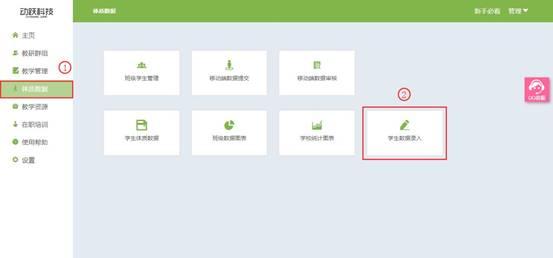

学生数据录入
视频教程：
学生在校的各项指标成绩，根据模板规则（表同【国家学生体质健康标准数据管理与分析系统】）上传表样，按照年级导入学生成绩，完成学生体质数据的录入。体质数据的所有功能，需要在【学生数据录入】模板录入完成后方可操作。
1. 登录动跃体育教学管理平台后，进入平台操作界面。
2. 点击体质数据 > 点击学生数据录入按钮，进入学生体质数据录入界面。

3. 进入数据录入页面后，首先需要下载模板，使学生数据吻合平台计算模板，录入数据后，数据才能正常计算及展示。

4. 点击下载模板，小学与中学的模板不相同，教师按照实际情况选择需要的模板下载，模板内容为EXCEL表格。
5. 打开下载的模板，核对平台模板与学校模板是否一致。如一致，使用学校模板上传数据到平台；如不一致，请将学校数据复制到下载模板中，使用平台模板上传数据到平台。
>小学模板
>中学模板
6. 点击数据录入按钮，弹出窗口，按要求选择，点击确定后，即保存成功。要求如下：
>选择学年：选择已设置完成的学年。
>选择年级：根据学生所处的年级选择，由一年级至九年级不等。
>选择班级：根据学校分的班级，选择学生所处的班级信息。
>导入：导入准备好的学生数据模板文件。
7. 点击蓝色字体，或最右边的按钮弹出的查看按钮，即可查看录入的学生体质数据。
8. 学生体质数据查看示例。
9. 历史数据录入，历史数据是当前学年以前的数据展示，录入前一学年，或之前多个学年的数据与当前学年的数据对比，可直观显示出学生在这几个学年身体素质的变化。点击历史数据录入，录入方法与数据录入方法相同，学年输入要上传数据的学年即可。